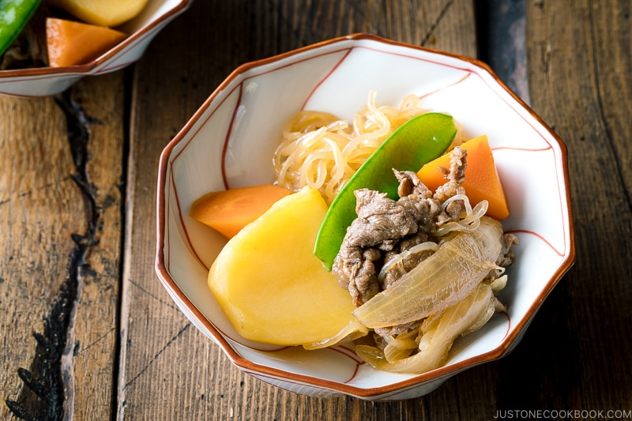

Nikujaga Recipe
Nikujaga is Japanese Meat and Potato Stew.
Let's make it and have a fun to feel japanese mother's taste!

Ingredients You’ll Need
- Potatoes
- Thinly sliced beef or pork (thinly sliced meat cooks a lot faster!)
- Onion
- Shirataki noodles (Ito Konnyaku)
- Carrot
- Green vegetables (Most commonly snow peas, green beans, or green peas)
- Seasonings – soy sauce, sugar, mirin, sake, optional dashi
Procedure
- Blanch green vegetable of your choice in a separate small pot. Set aside for the last step.
- Cook shirataki noodles according to package directions.
- In a large pot, cook the onion and then add meat.
- Add potatoes and coat them well with oil.
- Add the rest of ingredients, including shirataki noodles.
- Add seasonings and simmer for 15 minutes.
- Let cool for 30-60 minutes.
- When ready to serve, add in blanched green vegetable and reheat to serve.